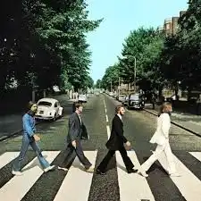

The Beatles

The Beatles ([ˈbiːtɛls]; engelskt uttal: [ˈbiːtəlz]) var en stilbildande brittisk pop- och rockgrupp som var aktiv under 1960-talet och känd som musikhistoriens kommersiellt mest framgångsrika band med bland annat över 500 miljoner sålda skivor och flest listettor (20) på den amerikanska singellistan Billboard Hot 100.[4] Bandet, som bildades i Liverpool 1960, bestod under succéåren av de fyra medlemmarna John Lennon, Paul McCartney, George Harrison och Ringo Starr, av vilka de två förstnämnda låg bakom merparten av gruppens egna låtar. Med sina musikaliska innovationer med influenser från en mängd olika genrer kom Beatles att bli en av de absolut mest inflytelserika musikgrupperna i historien[5] och via sin enorma popularitet, genom fansens oerhörda entusiasm känd som "Beatlemania", inte bara spred de musikaliska trender utan påverkade även mode, filmskapande och politik.[6]